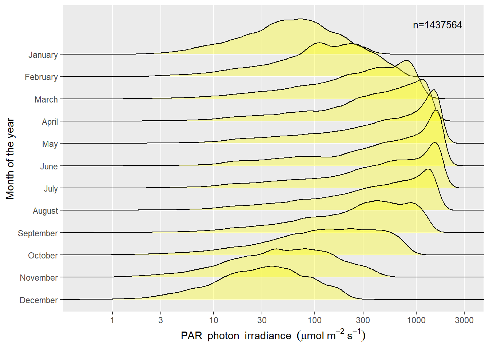
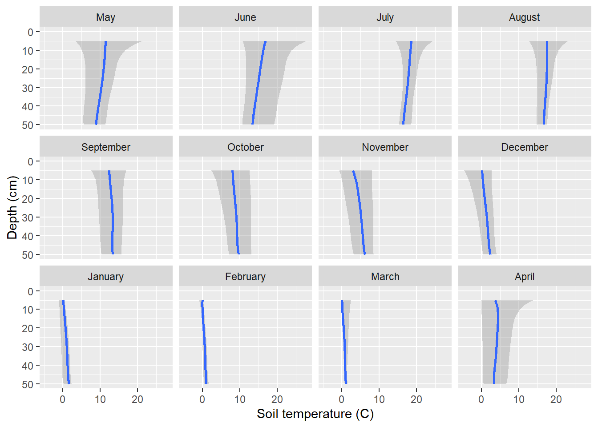
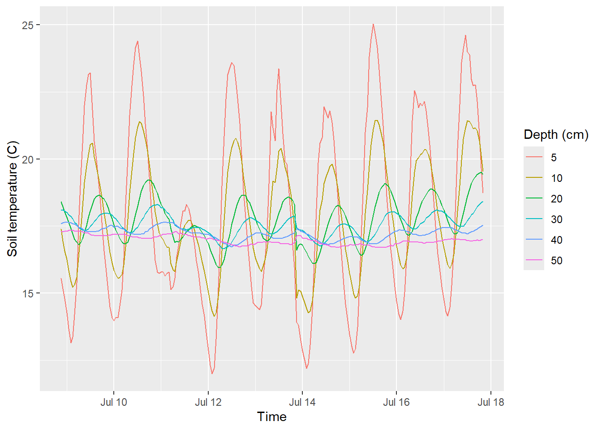

flowchart TD
A((Datalogger:\nData acquisition)) -.-> B
B[Datalogger:\n Computation of summaries\n and data storage] -->|Download data| C
C[Computer with PC400:\n Data download from logger] -->|Import data| D
D[Computer with R:\n Read most recent raw data file\n and validate data] -.-> DD
DD[Computer with R:\n Save data to .Rda file\n and validate data] -->|Read data| E
E[Computer with R:\n Read all data from .Rda files] -.-> EE
EE[Computer with R:\n Apply sensor calibrations based on dates] -.-> F
F[Computer with R:\n Merge data into a single time series] -.-> G
G[Computer with R:\n compute derived quantities] -.-> H
H[Computer with R:\n prepare metadata and add it to R objects] -.-> I
I[Computer with R:\n save to .Rda and .CSV files] -->|Upload| J((OSF repository:\n publish on line))
Data acquired and computed
Quantities published and their origin
Methods
Abstract
This page describes the data available from the weather station at the Viikki campus of the University of Helsinki, at Helsinki, Finland.
Keywords
datalogger, data processing, published data
1 What makes data from this weather station different?
Time interval for acquisition of measurements (2015 to 2024-04-15): 5 s.
Time interval for acquisition of measurements (2024-04-15 to present): 1 s.
Time interval for logging of summaries (2015 to 2024-04-15): 1 min, 1 h, 1 d.
Time interval for logging of summaries (2024-04-15 to present): 1 s, 1 min, 1 h.
Solar radiation measurement: currently seven types of broadband sensors.
Soil measurements as a depth profile.
Data provided as a free service for research at the experimental field of the Viikki campus.
Data for state-of-the-art research on the spectrum of sunlight and its fast variation.
Open access to these data, deposited under a citable DOI.
2 Data availability
Open access through Open Science Foundation under DOI 10.17605/OSF.IO/E4VAU.
To be cited, after adding date when the site was visited to download the data, as:
Aphalo, Pedro J. 2024. High Frequency Weather Data for Viikki, Helsinki, Finland. OSF (Open Science Foundation). doi:10.17605/OSF.IO/E4VAU.
3 Limitations of the data
Radiation data in winter months is very unreliable as the sensors lack a blower to keep the snow away. Some of the radiation sensors have heating but this does not help much with sticky snow. Precipitation as snow or sleet is not detected by the weather sensor, and also wind measurements can be potentially affected by snow and ice accumulation. Other variables can be trusted year-round. The intention of this station was initially to take readings during the growing season. The data in the files include winter values for all variables, including those which are expected not reliable on many days between mid November and late March, and a few days in April.
4 The data flow
The acquisition and summarizing of data requires multiples steps, some performed on board the datalogger and some in a personal computer Figure 1. The program in the logger is written in CRBasic, data are downloaded through a USB connection to a laptop computer in the field, using the program PC400. Later computations are done with R scripts that make use of packages from the R for Photobiology Suite (Aphalo2025)
Even if the program code used at some of these steps has been edited over the years, the steps have remained the same. The raw data files as downloaded from the logger are all stored indefinitely. This has made it possible to redo all data processing starting from step “import” when the R scripts have been edited to add new derived quantities, update calibrations, or fix errors. This is needed to ensure consistency through the whole time series of data.
Note
Over the eight years during which the station has been operational, there have been changes in the installed sensors (described under Equipment used and site description), and in the program run in the datalogger to acquire the data. Most of the changes to the program were related to the installation of new sensors. However, a few changes affected the data acquisition frequency as described in this callout.
Some variables earlier logged on a daily or hourly basis are no longer logged as they are now computed from higher frequency data during data processing after download from the logger. This change does not affect the continuity of the published time series data, as the two approaches are numerically equivalent.
The change in data acquisition frequency from once every 5 s to once every 1 s on 2024-04-15, could in principle decrease the variability of the 1 min summaries. However, the averaging period used for data acquisition was decreased at the same time as the frequency was increased. Means in the 1 min and 1 h time series are, thus, unlikely to be affected significantly. Minima and maxima, and standard deviations could, potentially be slightly affected.
Similarly, until 2023-xx-xx, the data from soil sensors was acquired once per 1 h and these values were directly logged. Since 2023-XX-XX, they are acquired once every 12 min, and 1 h means of 5 values logged. The values returned by the Vaisala WXT520 weather transmitter were acquired once every 5 s, but the polling frequency had to be decreased to once every 10 s for the WXT536. However, as the averaging period in the WXT536 for means computed on board the sensor was also increased, 1 min and 1 h averages should not be affected by this change. Minima and maxima, and standard deviations could, potentially be slightly affected.
5 Logged acquired and summary values
In this section I list the variables that are stored in the logger’s memory at different time intervals, plus the time and date-related variables that are computed and adjusted to UTC when the data are imported into R. The tables describe the variables as acquired and logged starting on 2024-04-15.
5.1 Quantities logged once per second
Logging of data once per 1 s tarted on 2024-04-15, thus the data listed in Table 1 are not available before this date at this frequency. They are nonetheless available as 1 min averages computed from data acquired once every 5 s.
| Quantity | Summary | Units |
|---|---|---|
| “TIMESTAMP” | sample | |
| “PAR_Den_Avg” | sample | µmol/s/m² |
| “PAR_BF_tot_Avg” | sample | µmol/s/m² |
| “PAR_BF_diff_Avg” | sample | µmol/s/m² |
| “Red_Den_cal_Avg” | sample | µmol/s/m² |
| “Far_red_Den_cal_Avg” | sample | µmol/s/m² |
| “RFR_rat_Avg” | sample | mol / mol |
| “Blue_Den_Avg” | sample | µmol/s/m² |
| “UVA_Den_Avg” | sample | µmol/s/m² |
| “UVB_Den_Avg” | sample | µmol/s/m² |
5.2 Quantities logged once per minute
The values currently logged are listed in Table 2. The quantities logged once per minute are means of multiple data values acquired by the data logger from the sensors. Until 2024-04-15 the data acquired values acquired once every 5 s, from which the summaries listed in Table 2 are derived were not logged. Starting from 2024-04-15, data are being acquired more frequently, once every 1 s, and thus the number of values used to compute 1 min means and other summaries has increased from 12 to 60. In the case of the weather variables acquired with the WXT weather transmitters, the data acquired by the logger are summaries computed on-board of these “intelligent sensors”.
| Quantity | Summary | Units |
|---|---|---|
| “TIMESTAMP” | sample | |
| “PAR_Den_Avg” | mean of 12/60 values | µmol/s/m² |
| “PAR_Den_CS_Avg” | mean of 12/60 values | µmol/s/m² |
| “PAR_Den_CS_Min” | min of 12/60 values | µmol/s/m² |
| “PAR_Den_CS_Max” | max of 12/60 values | µmol/s/m² |
| “PAR_BF_tot_Avg” | mean of 12/60 values | µmol/s/m² |
| “PAR_BF_diff_Avg” | mean of 12/60 values | µmol/s/m² |
| “Solar_irrad_Avg” | mean of 12/60 values | W/m² |
| “PTemp_C” | mean of 12/60 values | C |
| “WindSpd_S_WVT” | mean of 6 values | m/s |
| “WindDir_D1_WVT” | mean of 6 values | Deg |
| “WindDir_SD1_WVT” | mean of 6 values | Deg |
| “AirTemp_Avg” | mean of 6 values | C |
| “AirTemp_Min” | min of 6 values | C |
| “AirTemp_Max” | max of 6 values | C |
| “RelHumidity” | mean of 6 values | % |
| “AirDewPoint” | mean of 6 values | C |
| “AirPressure” | mean of 6 values | hPa |
| “Ramount_Tot” | sum | mm |
| “Hamount_Tot” | sum | hits/cm2 |
| “Red_Den_cal_Avg” | mean of 12/60 values | µmol/s/m² |
| “Far_red_Den_cal_Avg” | mean of 12/60 values | µmol/s/m² |
| “RFR_rat_Avg” | mean of 12/60 values | mol / mol |
| “Blue_Den_Avg” | mean of 12/60 values | µmol/s/m² |
| “UVA_Den_Avg” | mean of 12/60 values | µmol/s/m² |
| “UVB_Den_Avg” | mean of 12/60 values | µmol/s/m² |
| “SurfTemp_grnd_Avg” | mean of 12/60 values | C |
| “SurfTemp_veg_Avg” | mean of 12/60 values | C |
| “T107_C_Avg(1-4)” | mean of 12/60 values | C |
5.3 Quantities logged once per hour
The values currently logged are listed in Table 3, respectively. These values are directly computed from the acquired data, not from 1 min means.
| Quantity | Summary | Units |
|---|---|---|
| “TIMESTAMP” | sample | |
| “PAR_Den_Avg” | mean of 720/3600 values | µmol/s/m² |
| “PAR_Den_Std” | standard deviation of 720/3600 values | µmol/s/m² |
| “PAR_Den_Min” | min of 720/3600 values | µmol/s/m² |
| “PAR_Den_Max” | max of 720/3600 values | µmol/s/m² |
| “PAR_Den_CS_Avg” | mean of 720/3600 values | µmol/s/m² |
| “PAR_Den_CS_Std” | standard deviation of 720/3600 values | µmol/s/m² |
| “PAR_Den_CS_Min” | min of 720/3600 values | µmol/s/m² |
| “PAR_Den_CS_Max” | max of 720/3600 values | µmol/s/m² |
| “PAR_BF_tot_Avg” | mean of 720/3600 values | µmol/s/m² |
| “PAR_BF_tot_Std” | standard deviation of 720/3600 values | µmol/s/m² |
| “PAR_BF_tot_Min” | min of 720/3600 values | µmol/s/m² |
| “PAR_BF_tot_Max” | max of 720/3600 values | µmol/s/m² |
| “PAR_BF_diff_Avg” | mean of 720/3600 values | µmol/s/m² |
| “PAR_BF_diff_Std” | standard deviation of 720/3600 values | µmol/s/m² |
| “PAR_BF_diff_Min” | min of 720/3600 values | µmol/s/m² |
| “PAR_BF_diff_Max” | max of 720/3600 values | µmol/s/m² |
| “Solar_irrad_Avg” | mean of 720/3600 values | W/m² |
| “Solar_irrad_Std” | standard deviation of 720/3600 values | W/m² |
| “Solar_irrad_Min” | min of 720/3600 values | W/m² |
| “Solar_irrad_Max” | max of 720/3600 values | W/m² |
| “Red_Den_cal_Avg” | mean of 720/3600 values | µmol/s/m² |
| “Red_Den_cal_Std” | standard deviation of 720/3600 values | µmol/s/m² |
| “Red_Den_cal_Min” | min of 720/3600 values | µmol/s/m² |
| “Red_Den_cal_Max” | max of 720/3600 values | µmol/s/m² |
| “Far_red_Den_cal_Avg” | mean of 720/3600 values | µmol/s/m² |
| “Far_Red_Den_cal_Std” | standard deviation of 720/3600 values | µmol/s/m² |
| “Far_Red_Den_cal_Min” | min of 720/3600 values | µmol/s/m² |
| “Far_Red_Den_cal_Max” | max of 720/3600 values | µmol/s/m² |
| “RFR_rat_Avg” | mean of 720/3600 values | mol/mol |
| “RFR_rat_Std” | standard deviation of 720/3600 values | mol/mol |
| “RFR_rat_Min” | minimum of 720/3600 values | mol/mol |
| “RFR_rat_Max” | maximum of 720/3600 values | mol/mol |
| “Blue_Den_Avg” | mean of 720/3600 values | mV |
| “Blue_Den_cal_Std” | standard deviation of 720/3600 values | µmol/s/m² |
| “Blue_Den_cal_Min” | min of 720/3600 values | µmol/s/m² |
| “Blue_Den_cal_Max” | max of 720/3600 values | µmol/s/m² |
| “UVA_Den_Avg” | mean of 720/3600 values | mV |
| “UVA_Den_cal_Std” | standard deviation of 720/3600 values | µmol/s/m² |
| “UVA_Den_cal_Min” | min of 720/3600 values | µmol/s/m² |
| “UVA_Den_cal_Max” | max of 720/3600 values | µmol/s/m² |
| “UVB_Den_Avg” | mean of 720/3600 values | mV |
| “UVB_Den_cal_Std” | standard deviation of 720/3600 values | µmol/s/m² |
| “UVB_Den_cal_Min” | min of 720/3600 values | µmol/s/m² |
| “UVB_Den_cal_Max” | max of 720/3600 values | µmol/s/m² |
| “WindSpd_S_WVT” | mean of 360 values | m/s |
| “WindDir_D1_WVT” | mean of 360 values | degrees |
| “WindDir_SD1_WVT” | mean of 360 values | degrees |
| “AirTemp_Avg” | mean of 360 values | C |
| “AirTemp_Std” | standard deviation of 360 values | C |
| “AirTemp_Min” | min of 360 values | C |
| “AirTemp_Max” | max of 360 values | C |
| “RelHumidity_Avg” | mean of 360 values | % |
| “AirDewPoint_Avg” | mean of 360 values | C |
| “AirDewPoint_Std” | standard deviation of 360 values | C |
| “AirDewPoint_Min” | min of 360 values | C |
| “AirDewPoint_Max” | max of 360 values | C |
| “AirPressure_Avg” | mean of 360 values | hPa |
| “AirPressure_Min” | min of 360 values | hPa |
| “AirPressure_Max” | max of 360 values | hPa |
| “Ramount” | sum of 360 values | mm |
| “Hamount” | sum of 360 values | hits/cm2 |
| “SurfTemp_grnd_Avg” | mean of 720/3600 values | C |
| “SurfTemp_grnd_Std” | standard deviation of 720/3600 values | µmol/s/m² |
| “SurfTemp_grnd_Min” | min of 720/3600 values | µmol/s/m² |
| “SurfTemp_grnd_Max” | max of 720/3600 values | µmol/s/m² |
| “SurfTemp_veg_Avg” | mean of 720/3600 values | C |
| “SurfTemp_veg_Std” | standard deviation of 720/3600 values | µmol/s/m² |
| “SurfTemp_veg_Min” | min of 720/3600 values | µmol/s/m² |
| “SurfTemp_veg_Max” | max of 720/3600 values | µmol/s/m² |
| “VWC_[1-3]_Avg” | mean of 5 values | m3/m-3 |
| “EC_[1-3]_Avg” | mean of 5 values | dS/m |
| “T_[1-3]_Avg” | mean of 5 values | C |
| “VWC_5cm_[1-3]” | mean of 5 values | m3/m-3 |
| “Ka_5cm_[1-3]” | mean of 5 values | 1..80 |
| “T_5cm_[1-3]” | mean of 5 values | C |
| “BulkEC_5cm_[1-3]” | mean of 5 values | dS/m |
| “VWC_10cm_[1-3]” | mean of 5 values | m3/m-3 |
| “Ka_10cm_[1-3]” | mean of 5 values | 1..80 |
| “T_10cm_[1-3]” | mean of 5 values | C |
| “BulkEC_10cm_[1-3]” | mean of 5 values | dS/m |
| “VWC_20cm_[1-3]” | mean of 5 values | m3/m-3 |
| “Ka_20cm_[1-3]” | mean of 5 values | 1..80 |
| “T_20cm_[1-3]” | mean of 5 values | C |
| “BulkEC_20cm_[1-3]” | mean of 5 values | dS/m |
| “VWC_30cm_[1-3]” | mean of 5 values | m3/m-3 |
| “Ka_30cm_[1-3]” | mean of 5 values | 1..80 |
| “T_30cm_[1-3]” | mean of 5 values | C |
| “BulkEC_30cm_[1-3]” | mean of 5 values | dS/m |
| “VWC_40cm_[1-3]” | mean of 5 values | m3/m-3 |
| “Ka_40cm_[1-3]” | mean of 5 values | 1..80 |
| “T_40cm_[1-3]” | mean of 5 values | C |
| “BulkEC_40cm_[1-3]” | mean of 5 values | dS/m |
| “VWC_50cm_[1-3]” | mean of 5 values | m3/m-3 |
| “Ka_50cm_[1-3]” | mean of 5 values | 1..80 |
| “T_50cm_[1-3]” | mean of 5 values | C |
| “BulkEC_50cm_[1-3]” | mean of 5 values | dS/m |
5.4 Quantities logged once per day (until 2024-4-15)
Note
As individual observations are being logged since 2024-04-15, the histograms earlier computed by the logger can now be computed off-line, reducing the data processing load in the logger, to facilitate faster data acquisition and logging.
| Quantity | Summary | Units |
|---|---|---|
| “TIMESTAMP” | sample | yyyy-mm-dd |
| “PAR_Den_Hst(1-25)” | histogram with 25 bins | µmol/s/m² |
| “PAR_Den_CS_Hst(1-25)” | histogram with 25 bins | µmol/s/m² |
| “Solar_irrad_Hst(1-25)” | histogram with 25 bins | µmol/s/m² |
| “PAR_DenLog_Hst(1-12)” | histogram with 12 bins | log(µmol/s/m²) |
| “PAR_DenLog_CS_Hst(1-12)” | histogram with 12 bins | log(µmol/s/m²) |
| “Solar_irradLog_Hst(1-10)” | histogram with 10 bins | log(µmol/s/m²) |
| “RFR_rat_Hst(1-10)” | histogram with 10 bins | mol/mol |
6 Data processing in R
The logged data are imported into R from files created by Campbell Scientific’s PC400 program. The files are read using function read_csi_dat()` from package ‘photobiologyInOut’. The data now in data frames are checked for duplicate rows, outlier values, and time shifts. Problems are corrected when possible or data replaced by NAs when recovery is not possible.
In a separate step, R scripts are used to merge data in the different files created during import into R. Vakidated calibrations and corrections are applied obtaining a single data object with all data logged at a given frequency.
Derived quantities are calculated and added to the data set, including solar time, sun elevation and sun azimuth ?@tbl-import-secon. The position of the sun and solar time are computed using Meuss (1998) very accurate equations as implemented in R package ‘photobiology’. The coordinates of the weather station are for the locations of the mast, with radiation sensors within 1.5 m of it, and soil sensors within 10 m. The accuracy is that allowed by the image layer of Google Maps with high resolution imagery.
| Quantity | Summary | Units |
|---|---|---|
| “time” | sample | yyyy-mm-dd hh:mm:ss UTC |
| “day_of_year” | sample | numeric |
| “month_of_year” | sample | 1..12 |
| “month_name” | sample | character |
| “calendar_year” | sample | numeric |
| “time_of_day” | sample | numeric |
| “solar_time” | sample | numeric |
| “sun_elevation” | sample | degrees |
| “sun_azimuth” | sample | degrees |
| “PAR_BF_diff_fr” | sample | /1 |
| “was_sunny” | sample | logical |
| :—————– | :——– | :———————— |
| “time” | sample | yyyy-mm-dd hh:mm:ss UTC |
Depending on the date of data acquisition, some calibrations are applied at this stage. {#tbl-import-second}
Variable was_sunny indicates occlusion or not of the solar disk, estimated based on the deviation from the expected fraction of diffuse PAR at the current sun elevation. The reference value is derived from spectral irradiance simulations done with the TUV radiation transfer and atmosphere photochemistry model TUV. The variable is set to NA when the sun is below the horizon or diffuse PAR irradiance is less than 5 \(\mathrm{\mu mol\,m^{-2}\,s^{-1}}\).
The irradiances of UV-A1 and UV-A2 are derived from the measured UV-A, UV-B and blue irradiances, based on calibrations on-site against a spectrometer. The UV-A irradiance measurements are also corrected for the temperature coefficient of the sensor as published Langer 2020, taking into account spectral dependence of the temperature and radiation responses and the shape of the solar spectrum.
Warning
As the data have been logged for different lengths of time for the different variables, when merging the data into a single set containing columns for all variables measured since the start of the time series, some variables are filled-in with a marker of “not available” (NA) for different time periods.
Some of the mean values in the hourly data are computed off-line from data logged at 1 min interval, while other values are computed in the logger.
7 Information about the published data
In the examples below, we use R to read the data from .rda files, but the same data are also available as comma separated values (CSV) in Gnu Zip (gzip) compressed files.
File: Viikki Tower_TableSecond.dat
---
TOA5 Viikki Tower CR6 1449 CR6.Std.13.02 CPU:TowerViikki2024-04-fast.CR6 23455 TableSecond
---
TIMESTAMP TS
RECORD RN
PAR_Den_CS µmol/s/m² Smp
PAR_BF_tot µmol/s/m² Smp
PAR_BF_diff µmol/s/m² Smp
Red_Den_cal µmol/s/m² Smp
Far_red_Den_cal µmol/s/m² Smp
Blue_Den mV Smp
UVA_Den mV Smp
UVB_Den mV SmpThe data set at 1 second interval has 171340 rows and 34 variables.
The variables are series_start, time, day_of_year, month_of_year, month_name, calendar_year, time_of_day, solar_time, sun_elevation, sun_azimuth, PAR_umol_CS, PAR_umol_BF, PAR_umol, PAR_diff_fr, red_umol, far_red_umol, blue_umol, blue_sellaro_umol, UVA_umol, UVA1_umol, UVA2_umol, UVB_umol, blue_red, blue_red_sq, UVA_PAR, UVA_PAR_sq, UVA1_PAR, UVA1_PAR_sq, UVA2_PAR, UVA2_PAR_sq, UVB_PAR, UVB_PAR_sq, red_far_red, was_sunny.
File: Viikki Tower_TableMinute.dat
---
TOA5 Viikki Tower CR6 1449 CR6.Std.12.00 CPU:TowerViikki2022-09-08.CR6 55196 TableMinute
---
TIMESTAMP TS
RECORD RN
PAR_Den_Avg µmol/s/m² Avg
PAR_Den_CS_Avg µmol/s/m² Avg
PAR_BF_tot_Avg µmol/s/m² Avg
PAR_BF_diff_Avg µmol/s/m² Avg
Solar_irrad_Avg W/m² Avg
PTemp_C_Avg Celsius Avg
WindSpd_S_WVT m/s WVc
WindDir_D1_WVT Deg WVc
WindDir_SD1_WVT Deg WVc
AirTemp_Avg Celsius Avg
AirTemp_Min Celsius Min
AirTemp_Max Celsius Max
RelHumidity_Avg % Avg
AirDewPoint_Avg NA Avg
AirPressure_Avg hPa Avg
Ramount_Tot mm Tot
Hamount_Tot hits/cm2 Tot
Red_Den_cal_Avg µmol/s/m² Avg
Far_red_Den_cal_Avg µmol/s/m² Avg
RFR_rat_Avg mol/mol Avg
Blue_Den_Avg mV Avg
UVA_Den_Avg mV Avg
UVB_Den_Avg mV Avg
SurfTemp_grnd_Avg Celsius Avg
SurfTemp_veg_Avg Celsius Avg
T107_C_Avg(1) Celsius Avg
T107_C_Avg(2) Celsius Avg
T107_C_Avg(3) Celsius Avg
T107_C_Avg(4) Celsius Avg
SupplyVoltage_Min V Min
SupplyVoltage_Max V Max
ReferenceVoltage_Min V Min
ReferenceVoltage_Max V Max
BattV_Min Volts Min
BattV_Max Volts MaxThe data set at 1 min interval has 2979239 rows and 67 variables.
The variables are series_start, time, day_of_year, month_of_year, month_name, calendar_year, time_of_day, solar_time, sun_elevation, sun_azimuth, PAR_umol_LI, PAR_umol_CS, PAR_umol_BF, PAR_umol, PAR_diff_fr, global_watt, red_umol, far_red_umol, blue_umol, blue_sellaro_umol, UVA_umol, UVA1_umol, UVA2_umol, UVB_umol, blue_red, blue_red_sq, UVA_PAR, UVA_PAR_sq, UVA1_PAR, UVA1_PAR_sq, UVA2_PAR, UVA2_PAR_sq, UVB_PAR, UVB_PAR_sq, red_far_red, wind_speed, wind_direction, air_temp_C, air_temp_min_C, air_temp_max_C, air_vp, air_RH, air_DP, air_pressure, rain_mm_min, surf_temp_C, surf_temp_sensor_delta_C, was_sunny, solar_time_h, was_day, PAR_diff_fr_rel, logged_air_temp_C, air_temp_run_median, temp_surf2air_C, R_0, R_rel, Rn_sw_ref, Rn_ref, ET_ref_FAO56, ET_ref_short, ET_ref_tall, air_vpd, SupplyVoltage_Max, ReferenceVoltage_Min, ReferenceVoltage_Max, BattV_Min, BattV_Max.
The data set at 1 h interval has 49883 rows and 253 variables. The variables are time, time_first, day_of_year_first, month_of_year_first, month_name_first, calendar_year_first, time_last, day_of_year_last, month_of_year_last, month_name_last, calendar_year_last, time_of_day_median, solar_time_median, sun_elevation_median, sun_azimuth_median, PAR_umol_LI_mean, PAR_umol_LI_min, PAR_umol_LI_max, PAR_umol_CS_mean, PAR_umol_CS_min, PAR_umol_CS_max, PAR_umol_BF_mean, PAR_umol_BF_min, PAR_umol_BF_max, PAR_umol_mean, PAR_umol_min, PAR_umol_max, PAR_diff_fr_mean, PAR_diff_fr_min, PAR_diff_fr_max, global_watt_mean, global_watt_min, global_watt_max, red_umol_mean, red_umol_min, red_umol_max, far_red_umol_mean, far_red_umol_min, far_red_umol_max, blue_umol_mean, blue_umol_min, blue_umol_max, blue_sellaro_umol_mean, blue_sellaro_umol_min, blue_sellaro_umol_max, UVA_umol_mean, UVA_umol_min, UVA_umol_max, UVA1_umol_mean, UVA1_umol_min, UVA1_umol_max, UVA2_umol_mean, UVA2_umol_min, UVA2_umol_max, UVB_umol_mean, UVB_umol_min, UVB_umol_max, blue_red_mean, blue_red_min, blue_red_max, blue_red_sq_mean, blue_red_sq_min, blue_red_sq_max, UVA_PAR_mean, UVA_PAR_min, UVA_PAR_max, UVA_PAR_sq_mean, UVA_PAR_sq_min, UVA_PAR_sq_max, UVA1_PAR_mean, UVA1_PAR_min, UVA1_PAR_max, UVA1_PAR_sq_mean, UVA1_PAR_sq_min, UVA1_PAR_sq_max, UVA2_PAR_mean, UVA2_PAR_min, UVA2_PAR_max, UVA2_PAR_sq_mean, UVA2_PAR_sq_min, UVA2_PAR_sq_max, UVB_PAR_mean, UVB_PAR_min, UVB_PAR_max, UVB_PAR_sq_mean, UVB_PAR_sq_min, UVB_PAR_sq_max, red_far_red_mean, red_far_red_min, red_far_red_max, wind_speed_mean, wind_speed_min, wind_speed_max, wind_direction_mean, wind_direction_min, wind_direction_max, air_temp_C_mean, air_temp_C_min, air_temp_C_max, air_temp_min_C_mean, air_temp_min_C_min, air_temp_min_C_max, air_temp_max_C_mean, air_temp_max_C_min, air_temp_max_C_max, air_vp_mean, air_vp_min, air_vp_max, air_RH_mean, air_RH_min, air_RH_max, air_DP_mean, air_DP_min, air_DP_max, air_pressure_mean, air_pressure_min, air_pressure_max, rain_mm_min_mean, rain_mm_min_min, rain_mm_min_max, surf_temp_C_mean, surf_temp_C_min, surf_temp_C_max, surf_temp_sensor_delta_C_mean, surf_temp_sensor_delta_C_min, surf_temp_sensor_delta_C_max, was_sunny_mean, was_sunny_min, was_sunny_max, logged_air_temp_C_mean, logged_air_temp_C_min, logged_air_temp_C_max, air_temp_run_median_mean, air_temp_run_median_min, air_temp_run_median_max, temp_surf2air_C_mean, temp_surf2air_C_min, temp_surf2air_C_max, R_0_mean, R_0_min, R_0_max, R_rel_mean, R_rel_min, R_rel_max, Rn_sw_ref_mean, Rn_sw_ref_min, Rn_sw_ref_max, Rn_ref_mean, Rn_ref_min, Rn_ref_max, ET_ref_FAO56_mean, ET_ref_FAO56_min, ET_ref_FAO56_max, ET_ref_short_mean, ET_ref_short_min, ET_ref_short_max, ET_ref_tall_mean, ET_ref_tall_min, ET_ref_tall_max, air_vpd_mean, air_vpd_min, air_vpd_max, BattV_Min_mean, BattV_Min_min, BattV_Min_max, BattV_Max_mean, BattV_Max_min, BattV_Max_max, rain_mm_h, n, month_of_year, month_name, calendar_year, solar_time, VWC_5cm_1, Ka_5cm_1, T_5cm_1, BulkEC_5cm_1, VWC_5cm_2, Ka_5cm_2, T_5cm_2, BulkEC_5cm_2, VWC_5cm_3, Ka_5cm_3, T_5cm_3, BulkEC_5cm_3, VWC_10cm_1, Ka_10cm_1, T_10cm_1, BulkEC_10cm_1, VWC_20cm_1, Ka_20cm_1, T_20cm_1, BulkEC_20cm_1, VWC_30cm_1, Ka_30cm_1, T_30cm_1, BulkEC_30cm_1, VWC_40cm_1, Ka_40cm_1, T_40cm_1, BulkEC_40cm_1, VWC_50cm_1, Ka_50cm_1, T_50cm_1, BulkEC_50cm_1, VWC_10cm_2, Ka_10cm_2, T_10cm_2, BulkEC_10cm_2, VWC_20cm_2, Ka_20cm_2, T_20cm_2, BulkEC_20cm_2, VWC_30cm_2, Ka_30cm_2, T_30cm_2, BulkEC_30cm_2, VWC_40cm_2, Ka_40cm_2, T_40cm_2, BulkEC_40cm_2, VWC_50cm_2, Ka_50cm_2, T_50cm_2, BulkEC_50cm_2, VWC_10cm_3, Ka_10cm_3, T_10cm_3, BulkEC_10cm_3, VWC_20cm_3, Ka_20cm_3, T_20cm_3, BulkEC_20cm_3, VWC_30cm_3, Ka_30cm_3, T_30cm_3, BulkEC_30cm_3, VWC_40cm_3, Ka_40cm_3, T_40cm_3, BulkEC_40cm_3, VWC_50cm_3, Ka_50cm_3, T_50cm_3, BulkEC_50cm_3, VWC_1, EC_1, T_1, VWC_2, EC_2, T_2, VWC_3.
Note
A detailed data dictionary will be added soon to the data objects themselves. Data are in SI units and in most cases without scale factors. The units described for the logged data in the tables above are not modified except for sensors for which mV signals are logged.
8 Example plots
Using data saved at 1 min interval we can compute empirical desity distributions, showing how frequently different values have been observed.
8.1 PAR photon irradiance
Photosynthetically active radiation photon irradiance at Viikki, Helsinki, presented as fitted empirical density functions for each month of the year ?@fig-PAR-month. During winter-time some snow from time to time accumulated on the sensor may have distorted the distribution to some extent. (Each curve in the plot can be thought as equivalent to a smoothed-out histogram, scaled to an area of one.)
Picking joint bandwidth of 0.0476
8.2 Soil temperature profile
In ?@fig-soil-temp-profile the soil temperature depth profile is shown. It is summarised using quantile regression for the 5%, 50% and 95% percentiles. This highlights the range of variation at different depths on different months of the year. The data values, not plotted, are medians from three sensors, logged once every 1 h..

In ?@fig-soil-temp-time-course we show hourly temperatures at different depths over a few days, showing the daily warming and cooling of the mostly bare soil. The data values shown are medians from three sensors, acquired once every 1 h.
